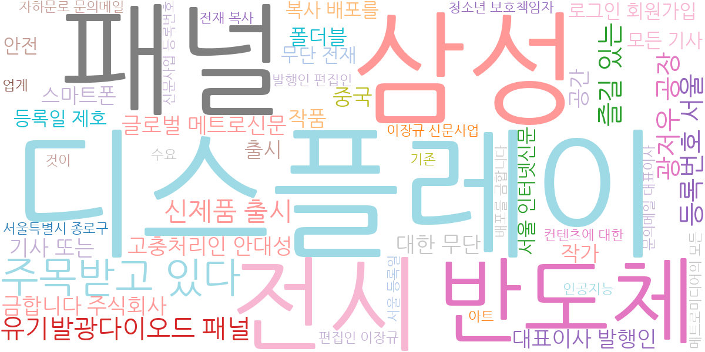
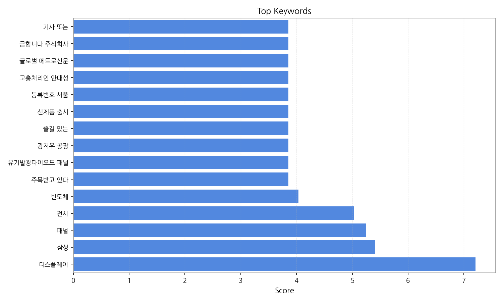
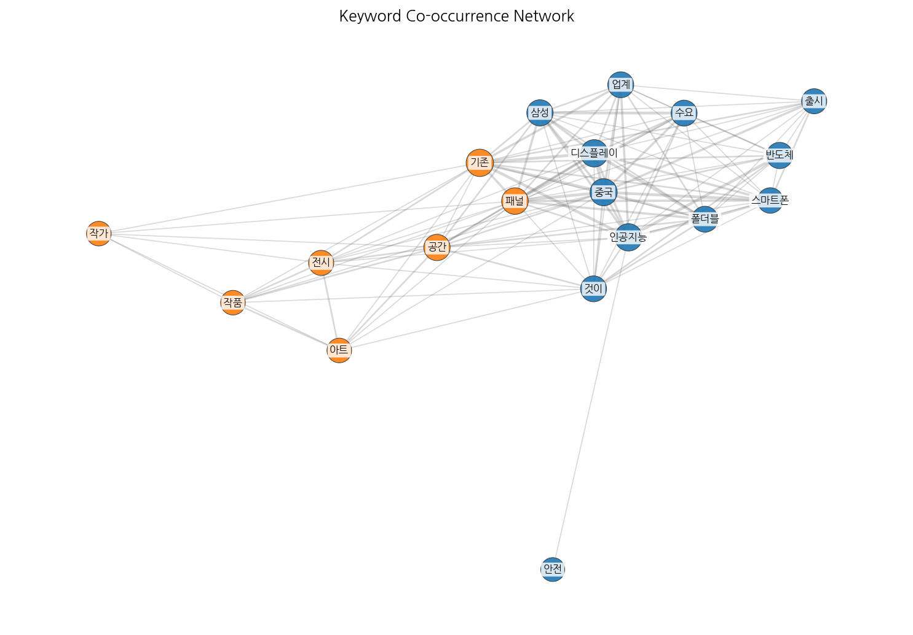
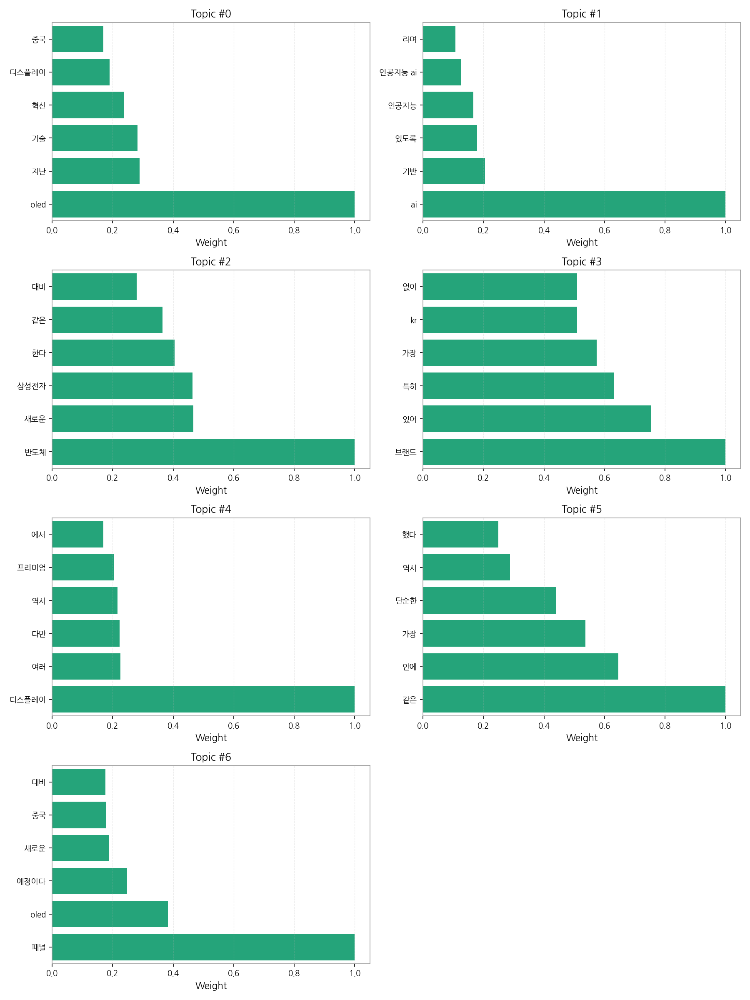

1) 상위 토픽을 3개 주제로 묶어 핵심 맥락을 설명하면 다음과 같습니다. 첫째, 첨단 디스플레이 기술 경쟁은 OLED를 중심으로 중국과의 기술 경쟁, 차세대 디스플레이 기술 혁신에 대한 내용을 다룹니다. 둘째, AI 기반 기술 및 산업 동향은 AI 기술의 발전과 산업 적용, 특히 삼성과 같은 대기업의 AI 기술 개발 및 전략에 대한 기사가 주를 이룹니다. 셋째, 반도체 및 브랜드 경쟁력은 삼성전자를 비롯한 반도체 업계의 새로운 기술 개발 및 시장 경쟁, 그리고 브랜드 프리미엄 전략과 관련된 내용을 다루고 있습니다. 이 세 가지 주제는 한국 주요 산업의 기술 경쟁력과 미래 전략을 보여주는 핵심 내용입니다.
2) 최근 변화/스파이크를 짚어보면, 9월 10일부터 9월 12일 사이에 기사 수가 급증하는 현상이 나타났습니다. 이는 특정 기술 발표나 시장 이벤트 등으로 인해 해당 기간 동안 관련 뉴스 보도가 집중적으로 이루어졌음을 시사합니다.
3) 실무 인사이트 3가지:

| Rank | Keyword | Score |
|---|---|---|
| 1 | 디스플레이 | 7.206 |
| 2 | 삼성 | 5.411 |
| 3 | 패널 | 5.243 |
| 4 | 전시 | 5.024 |
| 5 | 반도체 | 4.037 |
| 6 | 주목받고 있다 | 3.852 |
| 7 | 유기발광다이오드 패널 | 3.852 |
| 8 | 광저우 공장 | 3.852 |
| 9 | 즐길 있는 | 3.852 |
| 10 | 신제품 출시 | 3.852 |
| 11 | 등록번호 서울 | 3.852 |
| 12 | 고충처리인 안대성 | 3.852 |
| 13 | 글로벌 메트로신문 | 3.852 |
| 14 | 금합니다 주식회사 | 3.852 |
| 15 | 기사 또는 | 3.852 |



1) 상위 토픽을 3개 주제로 묶어 핵심 맥락을 설명하면 다음과 같습니다. 첫째, 첨단 디스플레이 기술 경쟁은 OLED를 중심으로 중국과의 기술 경쟁, 차세대 디스플레이 기술 혁신에 대한 내용을 다룹니다. 둘째, AI 기반 기술 및 산업 동향은 AI 기술의 발전과 산업 적용, 특히 삼성과 같은 대기업의 AI 기술 개발 및 전략에 대한 기사가 주를 이룹니다. 셋째, 반도체 및 브랜드 경쟁력은 삼성전자를 비롯한 반도체 업계의 새로운 기술 개발 및 시장 경쟁, 그리고 브랜드 프리미엄 전략과 관련된 내용을 다루고 있습니다. 이 세 가지 주제는 한국 주요 산업의 기술 경쟁력과 미래 전략을 보여주는 핵심 내용입니다.
2) 최근 변화/스파이크를 짚어보면, 9월 10일부터 9월 12일 사이에 기사 수가 급증하는 현상이 나타났습니다. 이는 특정 기술 발표나 시장 이벤트 등으로 인해 해당 기간 동안 관련 뉴스 보도가 집중적으로 이루어졌음을 시사합니다.
3) 실무 인사이트 3가지:
| Idea | Target | Value Prop | Score |
|---|---|---|---|
| AI 기반 디스플레이 품질 검사 플랫폼 | LG디스플레이, 삼성디스플레이 등 대형 디스플레이 제조사 (KR) | AI 기반 자동화 시스템으로 불량률 감소 및 생산 효율 증대. 기존 시스템 대비 검사 속도 및 정확도 향상. 실시간 데이터 분석을 통한 예측 정비 가능. 차별화 포인트: 다양한 디스플레이 패널 유형에 대한 학습 및 적용 가능한 유연한 AI 모델 제공. | 4.50 |
| 모빌리티 디스플레이 맞춤형 데이터 분석 서비스 | 자동차, 항공기 제조사 및 관련 부품 기업 (EU) | 모빌리티 디스플레이 사용 데이터 분석을 통한 사용자 경험 개선 및 신규 서비스 개발 지원. 맞춤형 데이터 분석 및 시각화 도구 제공. 차별화 포인트: 개인정보보호 준수 및 익명화 기술 기반 데이터 분석. | 4.20 |
| 디스플레이 사이니지 통합 관리 서비스 | 백화점, 쇼핑몰, 공항 등 대규모 사이니지 운영 기업 (KR, JP) | 중앙 집중식 관리 시스템을 통해 사이니지 운영 효율 극대화. 콘텐츠 관리, 원격 제어, 고장 관리 등을 통합적으로 제공. 실시간 모니터링 및 분석을 통한 효율적인 운영 관리. 차별화 포인트: 다국어 지원 및 다양한 사이니지 기종 호환성. | 4.00 |
| 전자부품 조달 플랫폼 (B2B) | 디스플레이, 모빌리티 관련 중소/중견 제조 기업 (KR) | 원스톱 전자 부품 조달 플랫폼 제공. 다양한 공급업체의 부품 정보 제공 및 가격 비교 기능. 품질 관리 및 재고 관리 시스템 연동. 차별화 포인트: AI 기반 수요 예측 및 재고 관리 기능 제공. | 3.80 |
| 디스플레이 산업 전문가 네트워크 플랫폼 | 디스플레이 관련 연구원, 엔지니어, 경영진 (JP) | 디스플레이 산업 전문가를 위한 온라인/오프라인 네트워킹 플랫폼 제공. 전문 지식 공유 및 협업 기회 제공. 채용 정보 및 교육 프로그램 제공. 차별화 포인트: 다국어 지원 및 글로벌 네트워크 구축. | 3.50 |